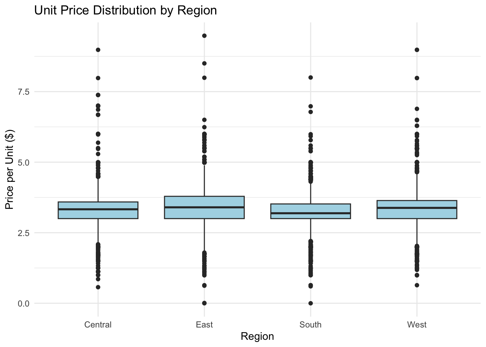

This blog post is going to explore purchasing behavior for Ben & Jerry’s ice cream using the “ice_cream” dataset.
We will examine pricing, household characteristics, coupon usage, and regional patterns to understand what factors influence dollar spending on ice cream.
library(tidyverse)
── Attaching core tidyverse packages ──────────────────────── tidyverse 2.0.0 ──
✔ dplyr 1.1.4 ✔ readr 2.1.4
✔ forcats 1.0.0 ✔ stringr 1.5.0
✔ ggplot2 3.4.4 ✔ tibble 3.2.1
✔ lubridate 1.9.3 ✔ tidyr 1.3.0
✔ purrr 1.0.2
── Conflicts ────────────────────────────────────────── tidyverse_conflicts() ──
✖ dplyr::filter() masks stats::filter()
✖ dplyr::lag() masks stats::lag()
ℹ Use the conflicted package (<http://conflicted.r-lib.org/>) to force all conflicts to become errors
The regression results suggest that regional differences are the strongest predictors of price variation, with the East region showing the highest unit prices. Coupon usage is associated with slightly higher unit prices, potentially reflecting usage on premium products. Household size has a small negative effect on unit price, possibly due to bulk purchasing behavior. Household income does not appear to meaningfully influence price paid. Overall, the model explains a modest portion of price variation, indicating that additional factors beyond household characteristics likely influence pricing.
Price Distribution by Region
ggplot(ice_cream, aes(x = region, y = priceper1)) +geom_boxplot(fill ="lightblue") +labs(title ="Unit Price Distribution by Region",x ="Region",y ="Price per Unit ($)" ) +theme_minimal()

The boxplot confirms regional variation in pricing, with the East showing the highest median unit price. Coupon usage does not appear to reduce the unit price substantially, supporting the regression findings.
ggplot(ice_cream2, aes(x =usecoup, y = effective_price))+geom_boxplot(fill ="steelblue") +facet_wrap(~ region) +labs(title ="Effective Price by Coupon Usage Across Regions",x ="Used Coupon",y ="Effective Price ($)" ) +theme_minimal()
ggplot(ice_cream2, aes(x = effective_price)) +geom_histogram(bins =30, fill ="darkgreen", alpha =0.7) +labs(title ="Distribution of Effective Unit Prices",x ="Effective Price ($)",y ="Count" ) +theme_minimal()